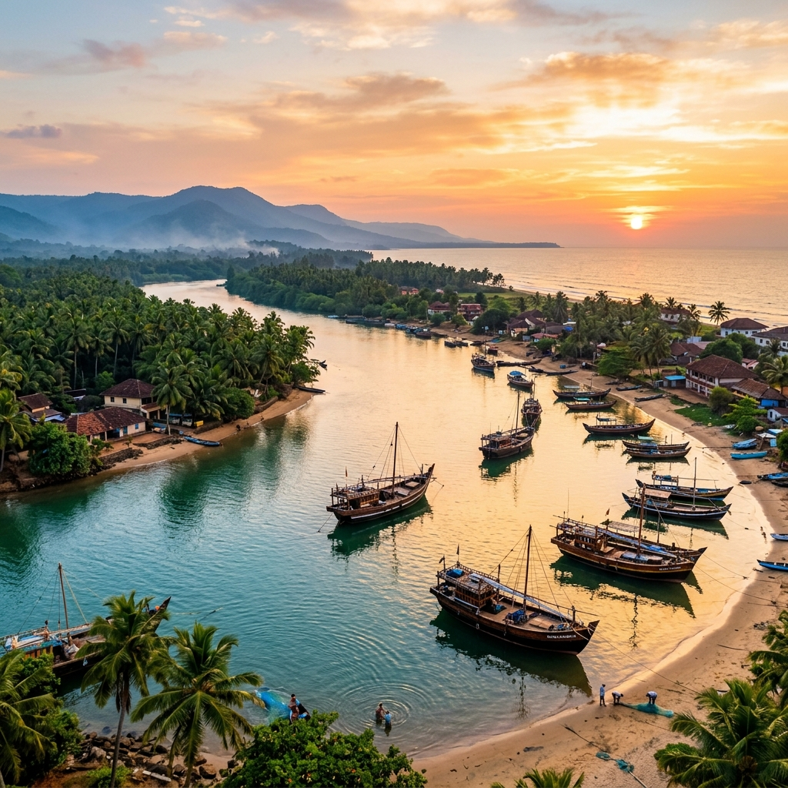
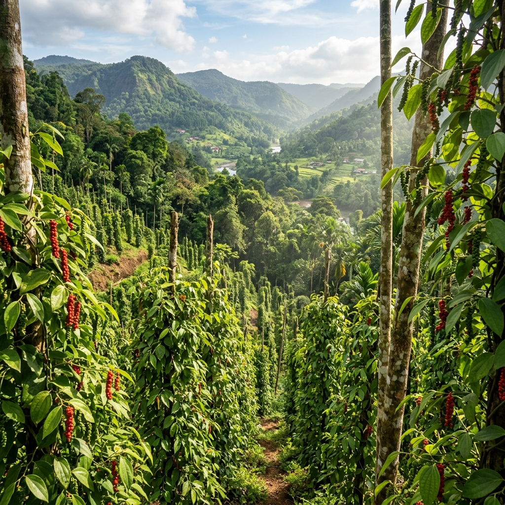

Honnavar Ancient Port Explorer
Step onto the shores of the Sharavati River backwaters. Discover Honnavar's rich history as a legendary medieval spice capital, its famous black pepper trade under the Pepper Queen, and the accounts of Ibn Battuta's historic voyages.
A Medieval Haven of Mariners and Scholars
Honnavar (known as Honore or Naour in ancient Roman texts) has served as an essential seafaring port on the Konkan coast since antiquity. Positioned at the mouth of the Sharavati River, Kalinga, Arab, and European fleets docked in its sheltered waters to trade gold and silver for coastal spices.
When the famous Moroccan traveler Ibn Battuta visited Honnavar in 1342, he was amazed by its prosperity. He described a wealthy urban society dominated by Muslim mariners, noting the town's highly advanced culture which boasted 23 schools for boys and 13 schools for girls, reflecting an early emphasis on education and global trade literacy.
📜 Coastal Chronicles
- Estuary Harbor: Nestled at the mouth of the Sharavati River in Uttara Kannada.
- Naour Emporium: Noted by Greek geographer Ptolemy as a key west-coast shipping station.
- Battuta's Account: Documented in 1342 as a wealthy city of dhow builders and marine scholars.
Spices and Timber Trade of the Western Ghats
Honnavar's trade thrived due to its direct access to the rich spice hills and timber forests of the Western Ghats.
Malabar Black Pepper
Famed globally as "Black Gold", Honnavar was a major shipping hub for premium pepper grown in the Gersoppa hills, heavily bought by Arab and European cartels.
Sandalwood & Teak
The nearby forests provided valuable teak wood for local shipbuilding yards and sandalwood logs for exports to China and the Persian Gulf.
Naval Shipbuilding
Under Haider Ali and Tipu Sultan, Honnavar housed state naval dockyards, utilizing coastal shipwrights to assemble armed merchant fleets.
👑 Gersoppa & The Pepper Queen
- Rani Chennabhairadevi: Governed Gersoppa and Honnavar for over 50 years, earning the Portuguese title *Rainha da Pimenta* (Pepper Queen).
- Ramatirtha: Natural freshwater springs near the port where incoming ships replenished their fresh water supplies.
- Sharavati Estuary: The scenic backwater lagoons where delta mangroves meet the Arabian Sea.
The Legacy of the Pepper Queen Chennabhairadevi
During the 16th century, Honnavar was ruled by the legendary Rani Chennabhairadevi of the Saluva dynasty. From her capital in Gersoppa, she managed the spice trade and defended the port's independence from Portuguese monopolies.
Her tactical alliances with local merchants and foreign buyers ensured Honnavar remained an active free port. The spring reservoirs of Ramatirtha and the river fortifications of Gersoppa highlight her strategic investments to sustain Honnavar as a major commercial center on the west coast.
Chronology of Honnavar Port
Tracking Honnavar's evolution from Naour emporium to Karnataka's historic spice harbor.
Naour Trade Station
Greco-Roman geographers register Honnavar (Naour) as a vital trade link on the Arabian Sea shipping route.
Ibn Battuta's Stay
The Moroccan traveller documents the wealthy mariners, local schools, and shipping docks of the Sharavati River estuary.
The Pepper Queen's Monopoly
Rani Chennabhairadevi of Gersoppa defends Honnavar, establishing a gold-standard spice export network with Arab and Dutch traders.
Tipu Sultan's Dockyard
Honnavar is selected as a premier state shipyard, constructing multi-decked merchant warships to challenge British cartels.
The Estuary and Plantations of Honnavar
Discover the natural beauty and historic trade relics of the Sharavati backwaters.



📚 References & Further Reading
- Gibb, H. A. R. (Translator) (1929). Ibn Battuta: Travels in Asia and Africa (1325-1354). Routledge & Kegan Paul.
- Campbell, James M. (1883). Gazetteer of the Bombay Presidency: Kanara, Vol XV, Part II. Government Central Press.
- Sastri, K. A. Nilakanta (1955). A History of South India. Oxford University Press.
- State Department of Archaeology. Excavation Reports and Epigraphia Carnatica: Gersoppa Inscriptions. Government of Karnataka.